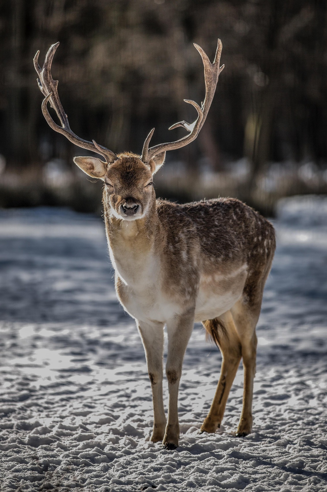

A deer has a calm, gentle presence that makes it one of the most graceful animals in the wild. With its slender legs, soft brown coat, and alert eyes, a deer moves quietly through forests and fields, always aware of its surroundings. It symbolizes peace, sensitivity, and natural beauty, often appearing in stories and cultures as a sign of harmony with nature.
